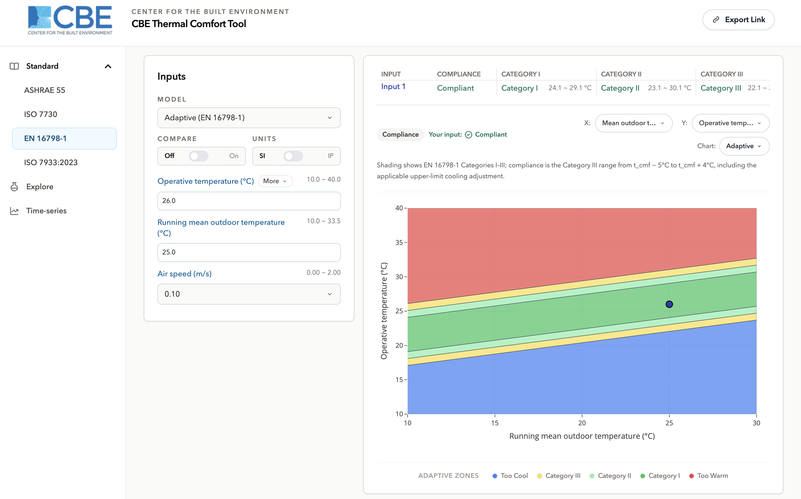
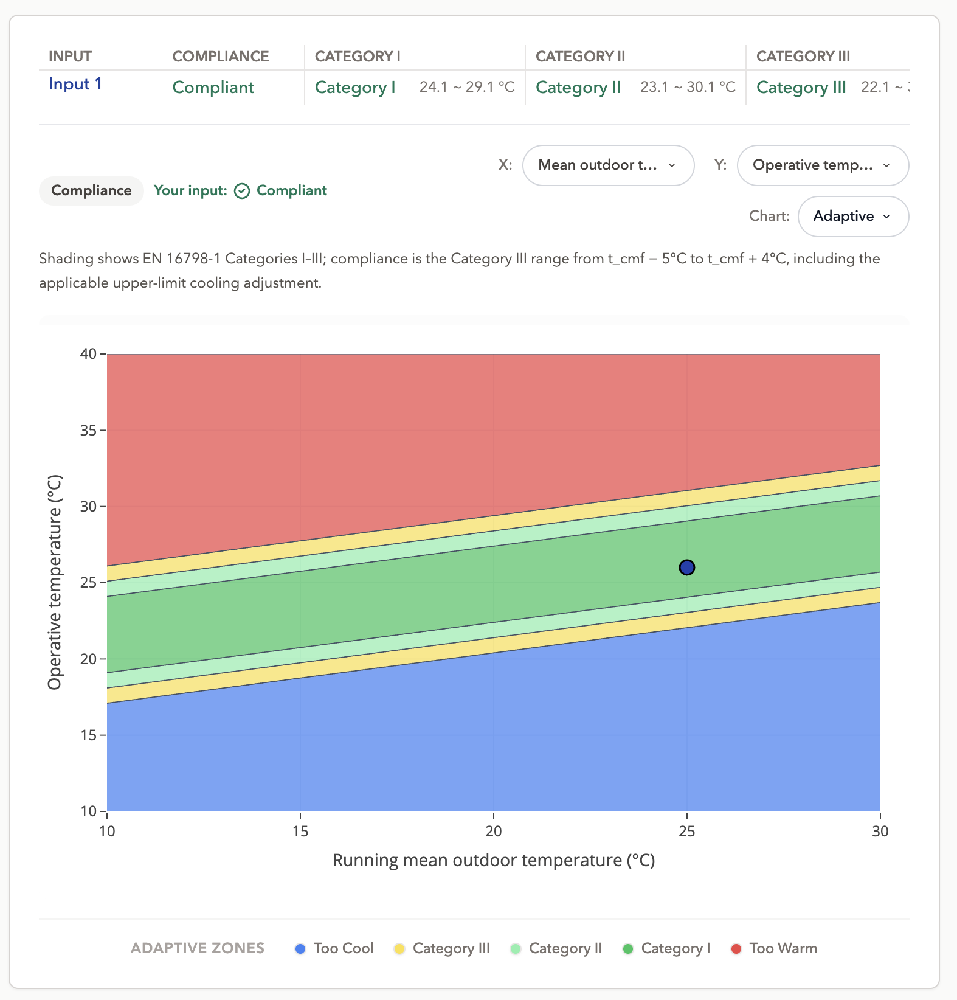

EN 16798-1
/standard/en-16798-1/1 modelSharing enabled
This tool, developed at the Center for the Built Environment, UC Berkeley, performs thermal comfort calculations following the EN 16798-1 standard. It is free, runs in any modern browser, and calculates entirely on your machine. This page describes the workspace and how to use its interface.
/standard/en-16798-1/, and an
optional model segment selects the model directly /standard/en-16798-1/adaptive-en/.Getting started
Main interface
The screen has three parts: the workspace navigation on the left, the input panel beside it, and the results and chart to the right. Results update as you type there is no calculate button.
The input panel carries the model selector, a Compare toggle for evaluating up to three sets of inputs at once, and a Units toggle between SI and Inch-Pound. The Share button in the header copies a link that reproduces the current inputs and chart.
One chart is available on this workspace: the adaptive comfort region chart, described below.

Comfort models
Adaptive method
This workspace offers the adaptive method only. Choosing it sets the variables to air temperature, mean radiant temperature or a single operative temperature and the outdoor running mean temperature. Metabolic rate and clothing insulation are not entered: the method's premise is that occupants of naturally conditioned buildings adjust these themselves, along with opening windows and shifting what they expect.
Use the method only where occupants genuinely control the openings and mechanical cooling is not in operation.
Outdoor running mean temperature
The exponentially weighted mean of recent daily outdoor temperature. It is the horizontal axis of the chart and the variable that decides where the comfort bands sit: raise it and the whole comfort region moves to warmer indoor temperatures.
Note the name. EN 16798-1 calls this the running mean; ASHRAE 55 calls its equivalent the prevailing mean. The tool uses each standard's own term, and the two are not interchangeable.
Air speed
Air movement can widen the comfort region, allowing higher indoor operative temperatures. Air speed is offered with presets suited to a naturally ventilated space.
The three categories
EN 16798-1 divides the comfort region into three nested categories rather than the two acceptability percentages used by ASHRAE 55:
| Category | Intended for |
|---|---|
| Category I | Spaces occupied by people with high expectations or particular sensitivity the narrowest band. |
| Category II | New buildings and renovations; the normal design case. |
| Category III | Existing buildings; a moderate, wider expectation. |
The tool treats category III as the compliance criterion, so a point inside the widest band is reported as compliant, and the result panel also names the best category the point achieves. Points outside the widest band are reported as too cool or too warm.

Applicability
The chart is drawn over a running mean outdoor temperature range of 10 °C to 30 °C, which is the range EN 16798-1 defines the relation over. This is narrower than the equivalent range in the ASHRAE adaptive method, so the same outdoor condition can be assessable under one standard and out of range under the other.
Predicted Mean Vote (PMV)
Additional features
Compare. Evaluates up to three sets of inputs at once, with per-input visibility and a picker for which set the chart is drawn around.
SI / IP. Toggles the unit system. Values are held internally in SI and converted for display, so switching back and forth does not drift.
Sharing. The link button copies a URL that encodes the current inputs and chart selection.
Chart export. The chart menu exports the adaptive chart as an image, with the same legend as the screen.
Where to go next
- Adaptive comfort (EN 16798-1) the model in detail.
- ASHRAE 55 the other adaptive method, and how the two differ.